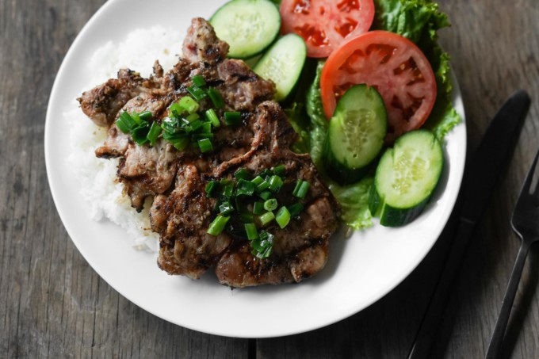
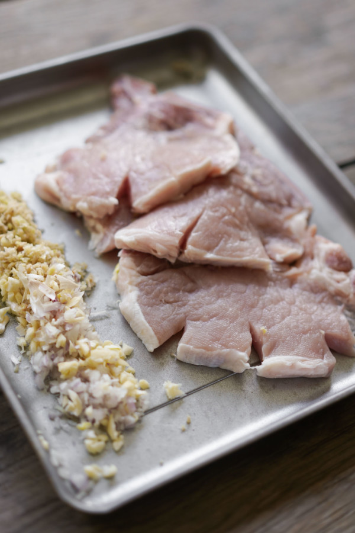

Vietnamese Pork Chops - Suon Nuong

Home
About the recipe:
This quintessential rice dish of Vietnamese pork chops is packed with flavor, super easy to make, and a crowd pleaser!
The marinade adds a ton of garlicky, lemongrassy flavor that pairs great with the pork chops. Grilling adds an amazing aroma and sear, and as if the chops aren’t flavorful enough, they’re topped with scallions & oil.
Prepping for pork chops
A cool trick for these “Asian pork chops” is to snip the pork chops around the edges like these. About 3-5 cuts per chop, about 1″ deep each. It looks kinda cool once you grill them up, but the important thing is that the pork chops will stay flat.
If you don’t cut the edges like this, the chops will curl as it cooks, making it more difficult to manage and cook evenly unless you’re baking them. Just cut em.

Ingredients:
- 2 lb pork chops (About 6 chops)
MARINADE
- 3 tablespoon sugar
- 2 tablespoon soy sauce
- 2 tablespoon fish sauce
- 1/2 teaspoon MSG
- 4 tablespoon neutral cooking oil
MARINADE AROMATICS
- 6 tablespoon lemongrass, minced
- 2 tablespoon garlic, minced
- 2 tablespoon shallots, minced
VEGGIES & GARNISH
- 1 tomato, sliced
- 1 cucumber, sliced
- 6 leaves green leaf lettuce
- 3 tablespoon dipping fish sauce (nuoc cham)
Steps:
- Rinse pork chops under running water and lightly scrub with salt. Pat dry with paper towels.
- Combine all marinade ingredients in a medium mixing bowl and stir to combine and dissolve sugar and MSG. Then add the Marinade Aromatics.
- Marinade the pork chops in a bowl or bag in the fridge for at least 3 hours, but ideally overnight.
- Remove the chops from the marinade and discard the extra liquid–you can keep the aromatics on that stuck to the chops though.
COOKING
- Grill: on a BBQ, giving at least 1-2 inches spacing between each chop. Sear on high heat for browning or grill marks for a few minutes, then lower to medium heat and cook on both sides, flipping often until cooked all the way through. When done, the pork should read 145 °F using an instant read thermometer at the thickest part of the cut.
- Pan fry: 1-2 chops at a time on medium to medium high heat without crowding the pan. When done, the pork should read 145 °F using an instant read thermometer at the thickest part of the cut.
- In the oven: In the oven: Bake at 375 °F for 15-20 minutes until the internal temperature of the meat hits around 135 °F. Lower the rack and broil, flipping a few times during broiling, to get nice coloring on both sides. Again, the pork is done when the internal temp reaches 145 °F.
Serve with a side of rice, veggies & garnish, and nuoc cham (dipping/prepared fish sauce).
Back to top
Source